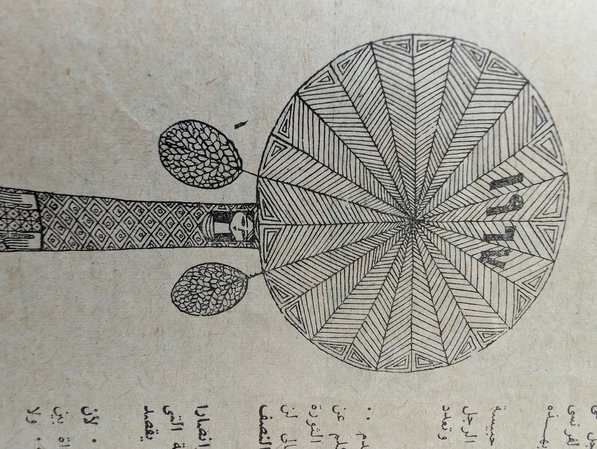

Figure beneath a patterned disk
G3—013Source image · user supplied · full frame retained
Source note / G3—013
Supplied file G3-013.jpg. This browsing specimen does not assign a maker, period, place, or ownership status. Open image in a new tab for full size.
Open supplied image ↗